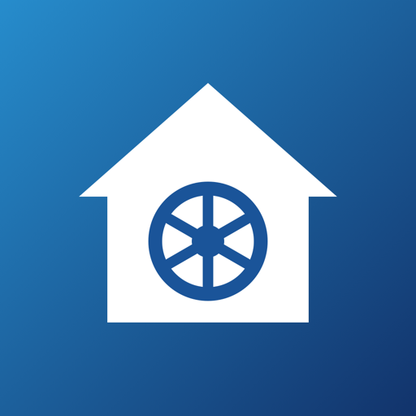

homevault
Fotos und Dateien vom Familienserver
Diese Seite bitte auf dem iPhone in Safari öffnen.
Neu: iPhone von Norman freigeschaltet, Update-Hinweis mit Datum
Gültig bis 12.10.2027. Vorher kommt rechtzeitig ein Update in der App.
Nach dem Tippen auf „Installieren“
- „Installieren“ bestätigen. Die App erscheint auf dem Home-Bildschirm.
- App öffnen, Server-Adresse und deinen homevault-Benutzer eingeben.
- Im Tab „Backup“ die Sicherung einschalten und Zugriff auf alle Fotos erlauben.
„App kann nicht installiert werden“?
Dann ist dein iPhone noch nicht freigeschaltet. Das geht einmalig so:
- Auf dem iPhone in Safari die Geräte-ID (UDID) anzeigen lassen, z. B. über median.co/udid. Dabei wird kurz ein Profil installiert.
- Die angezeigte UDID an den Admin schicken.
- Das Profil danach wieder löschen: Einstellungen → Allgemein → VPN & Geräteverwaltung.
- Sobald die nächste Version veröffentlicht ist, hier auf „Installieren“ tippen.
Updates zeigt die App selbst an. Fotos und Anmeldung bleiben dabei erhalten.